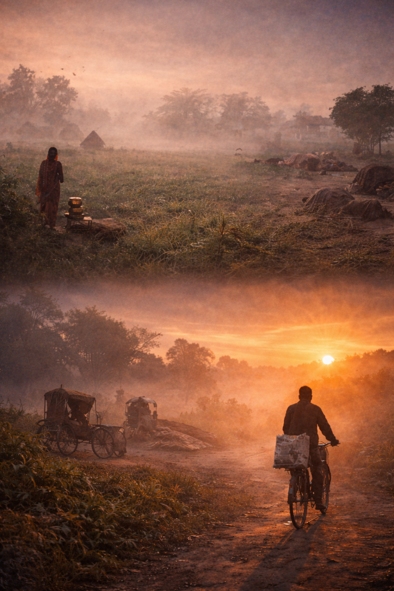

कभी सोचता हूँ, क्या था मैं और क्या हो गया,
ज़िंदगी का हर एक दिन जैसे एक साल हो गया।
वक़्त तो गुज़र रहा है, पर ज़िंदगी ठहर-सी गई,
समझ नहीं आता, ये मेरा सफ़र कहाँ खो गया।
हर रात ख़ुद से कहता हूँ, कल से शायद सब ठीक हो जाएगा,
हर सुबह एक नई उम्मीद लेकर आँख खुलती है।
मगर पता ही नहीं चलता, कब सुबह से शाम हो जाती है,
और एक और दिन ख़ामोशी में यूँ ही गुज़र जाता है।
फिर रात आती है, और वही सवाल घेर लेते हैं,
बस यूँ ही कट रही है ज़िंदगी ख़ामोशी के साथ।
न जाने आगे क्या होगा, यही सोच सताती है,
और हर रात, एक नई तन्हाई दे जाती है।
— आनंद कुमार सिंह